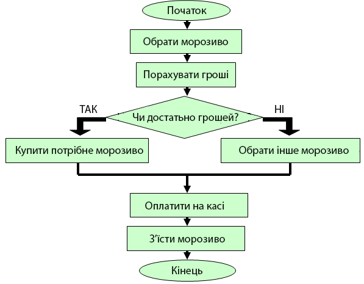
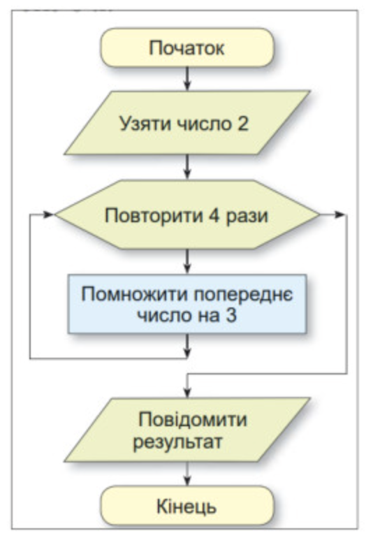

Це карта нашого алгоритму! Кожна дія або рішення зображується у вигляді спеціальної фігури. Це допомагає побачити весь шлях від початку до кінця.
Овалом позначаємо старт і фініш.
Прямокутник — це команда.
Наприклад, "встати з ліжка".
Ромб — це запитання, на яке можна
відповісти "Так" або "Ні".
Це **лінійний алгоритм** - дії йдуть одна за одною.
У житті ми постійно приймаємо рішення. Наприклад, подивившись у вікно, ми вирішуємо, брати парасольку чи ні. В алгоритмах це називається **розгалуження**.

Щоб не писати одну й ту саму команду багато разів, програмісти використовують **цикли**. Це команди, які змушують виконавця повторювати дії знову і знову, поки не виконається певна умова.
"Роби, ПОКИ..."

Сьогодні ми дізналися:
Тепер спробуймо створити свої алгоритми!